Same night. Same signal green. A more human JPAX: real places, real light, and systems that connect people to where they’re going.
The colors and the dark stay. What changes is where the light comes from. It used to come from screens and HUD glow. Now it comes from real scenes: dusk, a road, a lamp on a desk. The technology is still there; it just stops being the subject.
One continuous road writes both letters. The J comes in from the left, climbs, and the P loops back to where it started. It’s a journey that connects to itself, a system that works. The dashed center line keeps it from reading as a font. It’s a road, and roads are human.
Retiring: the 2025 JP monogram. It did its job, but it reads as gaming or apparel, not as a guide you’d trust with your business.
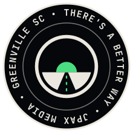
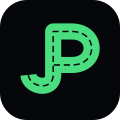
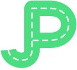
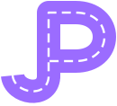
Clear space on every side = the width of the road. Minimum: 20px for the mark, 120px for the lockup.
Bone, Night, Signal or Dusk. The mark is solid; the world around it does the glowing.
No neon outer glow and no green-to-purple fill. That’s the old dashboard look coming back.
Don’t stretch, rotate, outline or drop the center line. The dashes are what make it a road.
Same Signal green, same Night. Each now has a full range of shades so you can build depth and fog instead of flat neon. Two atmosphere colors, pulled straight from your reference images, bring the warmth: dusk rose and lamplight amber. Tap any swatch to copy its hex.
Five fonts, each with a single job. The signature move: a condensed, uppercase statement that breaks into a serif italic, as if a person leaned in to finish the sentence. All are free on Google Fonts and already load on the web.
We build the websites, automations and content systems that take busywork off your plate, so a small team can move like a bigger one. You talk to the person building it, every time.
Your website, your follow-ups and your content, working as one road instead of ten detours.
Ten backgrounds, built from your references in the brand colors, each 26–63 KB so they load fast. The four main scenes come in 16:9 for the web and 4:5 for social. They live in brand/backgrounds/, along with a tileable film-grain overlay.
brand/backgrounds/
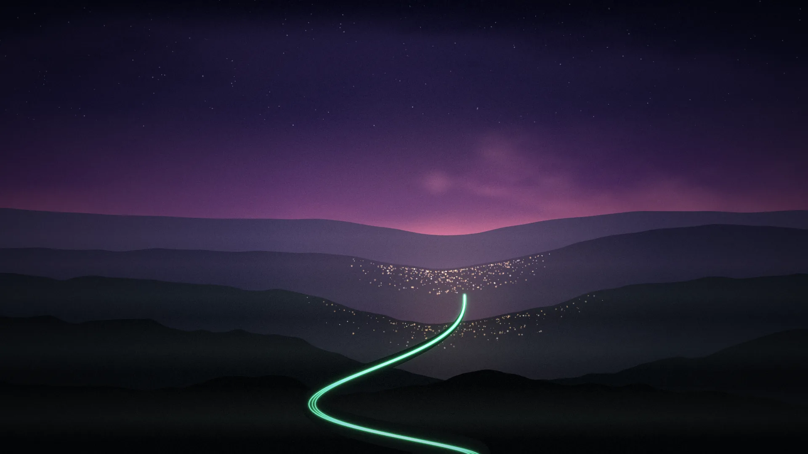
dusk-road · dusk-road-portrait
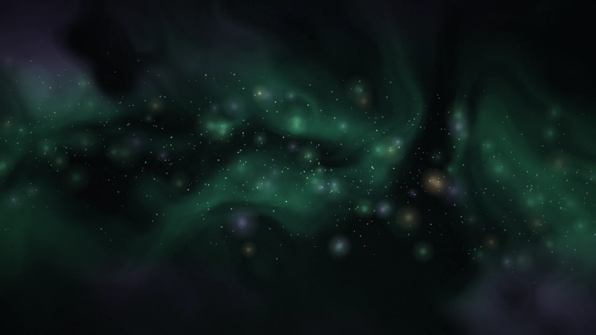
aurora-haze · aurora-haze-portrait
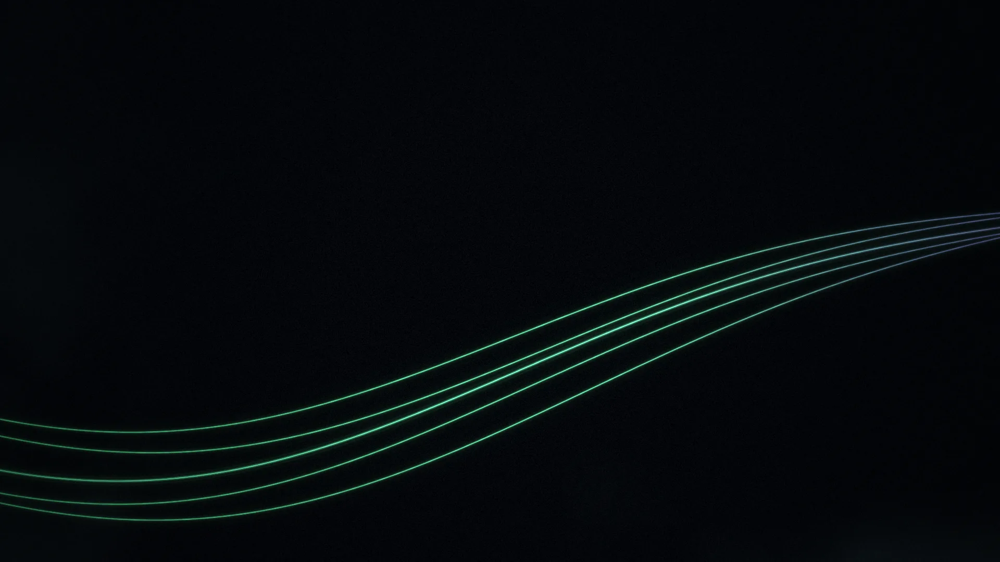
light-trails · light-trails-portrait
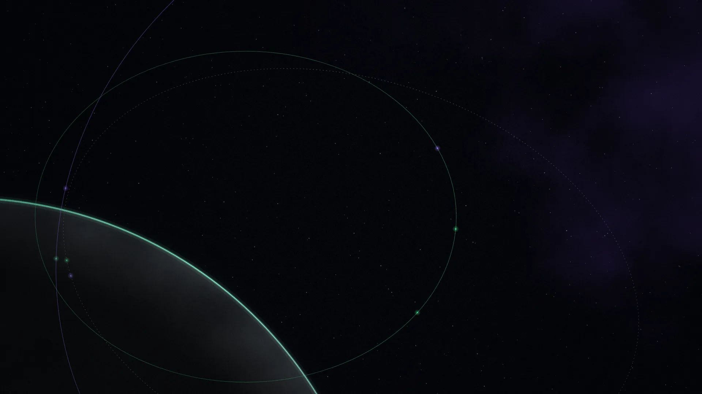
orbit · orbit-portrait
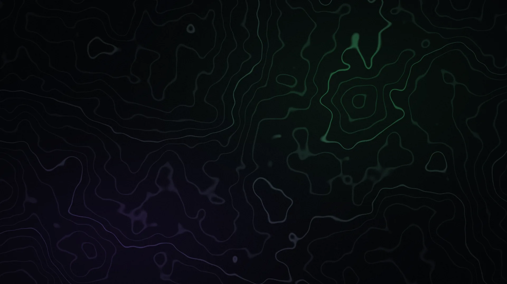
topo-map
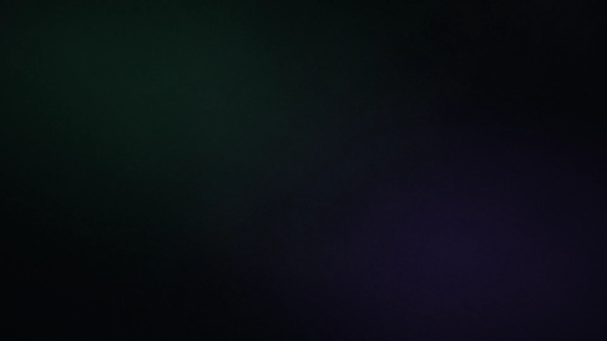
soft-fog · grain-tile.png
Mockups built from the real assets: a social post, the home page hero, business cards and profile avatars. One idea per surface, one green moment, and one handwritten note at most.
Websites, automations and content, built by one person who actually picks up the phone.
Your references already show the direction. The rule that ties them together: green and purple are always light in the scene (a lamp, a trail, the sky), never an overlay stuck on top. And a person or a place is in most frames. You at the desk is the most on-brand image you have.
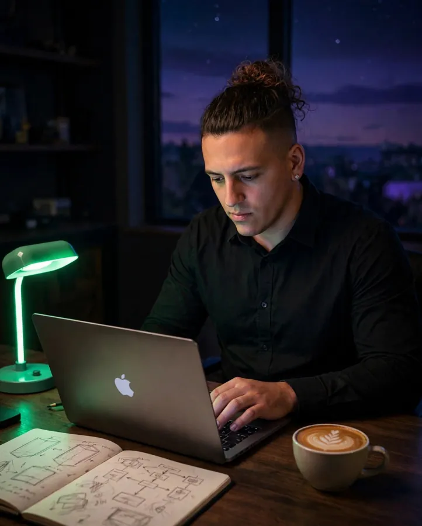
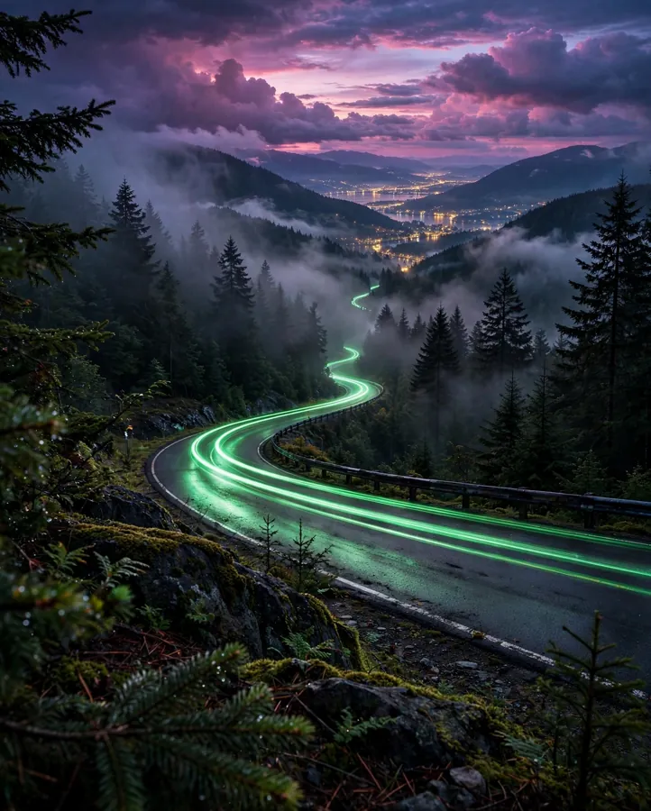
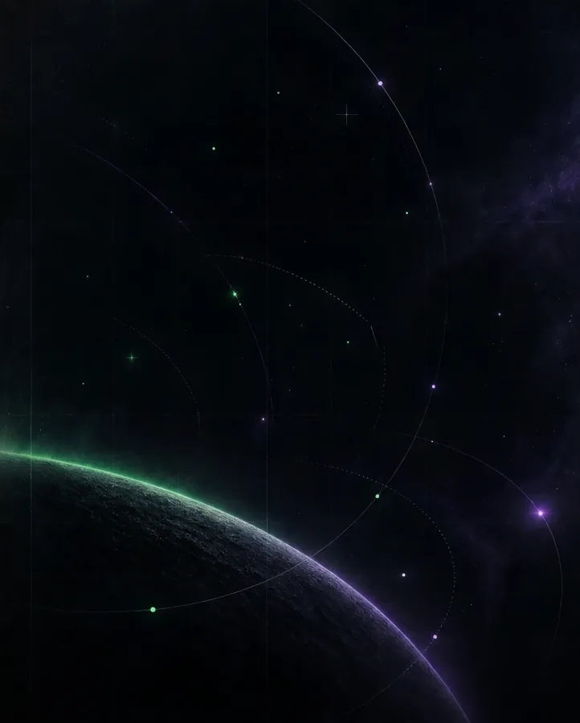
Dusk or night. Green comes from a real object: a lamp, taillights, a screen. Purple comes from the sky. Warm amber city lights add the human warmth.
35mm film grain, haze, wood desks, paper notebooks, moss, wet asphalt. Hand-sketched diagrams beat any UI screenshot.
Wide establishing shots with plenty of sky, or close, candid hands at work. Negative space goes top-left for headlines.
Short, plain and a little warm. Talk about what the client gets back (time, calm, momentum), not the tech. Speak as “we” on the site and “I” anywhere personal.
There’s a better way.
Built around the real problem.
Less busywork. More momentum.
Good ideas travel further.
Systems that connect.
Human direction matters.
The whole system works with any of these as the primary. Everything else on this page stays the same.
Most ownable and the most meaning per stroke. Reads as JP and as a road. Pair it with the Peak A wordmark.
The most cinematic and the calmest. It doesn’t spell JPAX, so the wordmark does more of the work.
No symbol, just the Peak A. Confident and minimal; the Seal handles the badge moments.